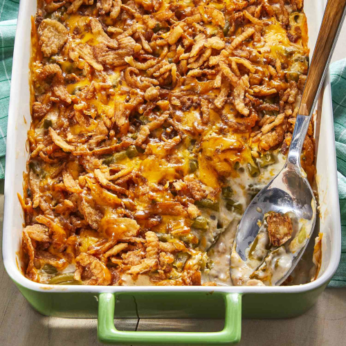

Green Bean Casserole

Description
A green bean casserole makes the Thanksgiving holiday complete, and this version can be on the table in no time at all thanks to just four ingredients from your pantry or fridge: canned green beans, condensed mushroom soup, French-fried onions, and shredded Cheddar cheese.
This green bean casserole is truly the best. Made with just four budget-friendly ingredients, you'll come back to this green bean casserole recipe year after year.
Ingredients
- Green beans: two cans
- Canned soup (Cream of Mushroom): one can
- Cheese: Cheddar (to taste)
- French-fried onions: to taste
- Optional ingredients: Crumbled bacon, sautéed mushrooms or onions, garlic, Parmesan cheese, black pepper
Steps to make the casserole
- Mix the beans and soup in a microwave-safe bowl and microwave until warm.
- Stir in half the cheese. Microwave until melted and well-blended.
- Transfer to a prepared baking dish. Top with fried onions and remaining cheese.
- Bake in the preheated oven until the cheese is melted and the onions are brown.